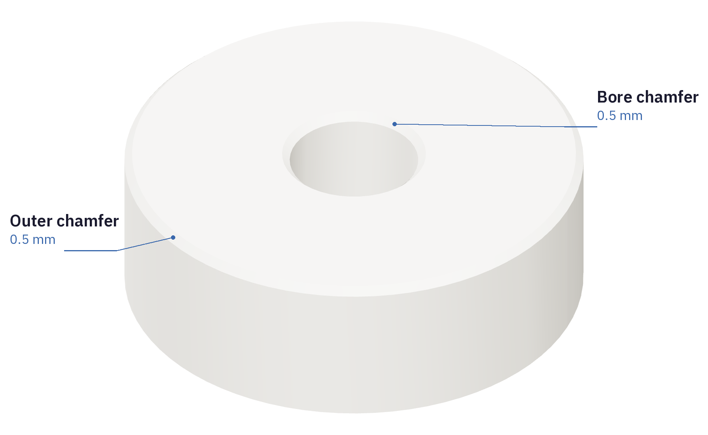

Clean the entry edges
Both pieces have a chamfer on the lower outside edge and the lower bore edge. These ends enter the shell first.

- Clip the thin brim from each cooled foam piece. Work around the edge with flush cutters.
- Pare away the remaining brim lip with a sharp craft knife, following the printed edge. Leave the cylindrical fitting surfaces and the chamfers intact.
- Clip loose strings from the central bores and the core's magnet pocket. Brush away all loose crumbs.
- Keep the pieces dry and covered on the bench until the shell is ready.
Orientation
Tall core: magnet pocket up, chamfered end down.
Short insert: chamfered end down, broad flat face up.